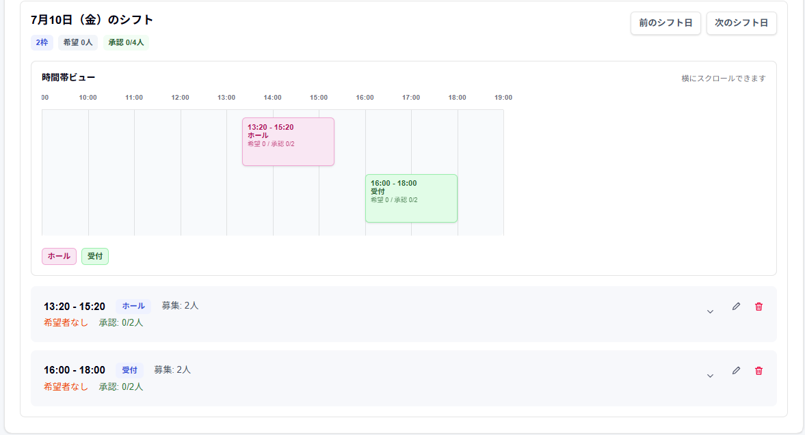
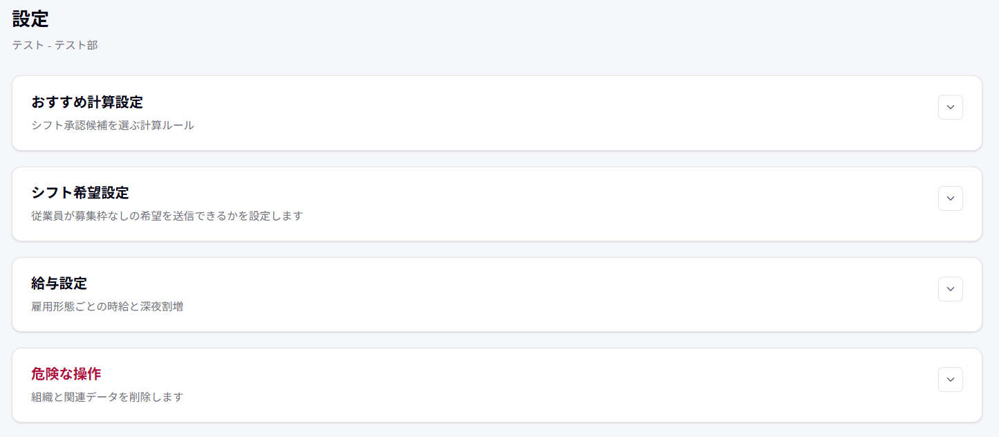
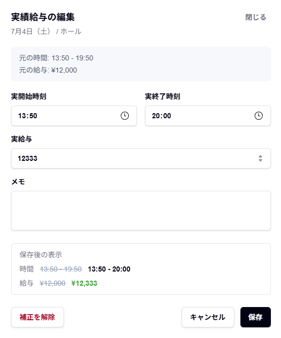
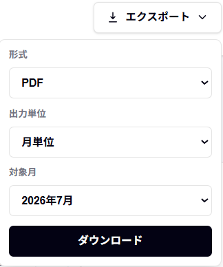
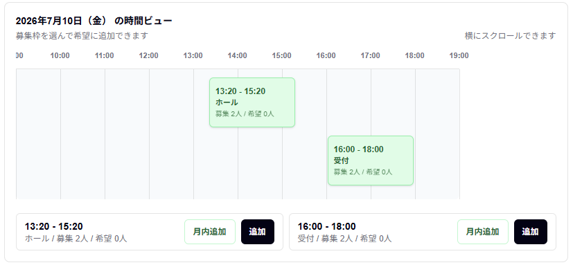
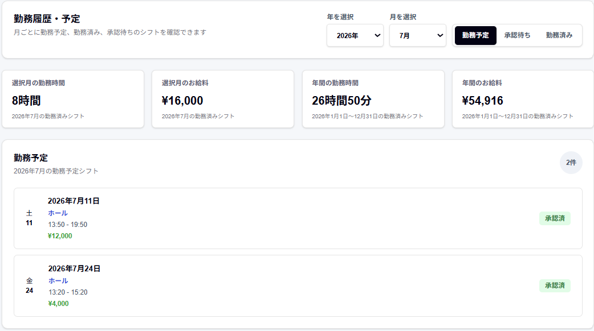

User Guide
Chess 操作マニュアル
管理者と従業員それぞれの操作を、現在の画面に沿って説明します。募集枠の作成、希望提出、相性・業務スキル・公平性を使った承認、確定シフト、勤務時間・給与、出力・カレンダー連携まで確認できます。
Start
利用開始の流れ
- 管理者がアカウントを作り、確認メールのリンクを開きます。
- 組織を作成し、シフトで使うポジションを追加します。
- 従業員の氏名、メールアドレス、雇用形態、業務スキルを登録します。
- 従業員へ6桁の組織IDと登録済みメールアドレスを共有します。
- 管理者が日時、ポジション、募集人数を指定してシフト枠を作ります。
- 従業員が希望を追加し、内容を確認して送信します。
- 管理者が希望者とおすすめ候補を確認し、承認します。
- 従業員がマイカレンダーで確定シフトを確認します。
- 勤務後は必要に応じて、管理者が実時間・実給与・メモを補正します。
従業員のログインにパスワードや確認用コードは不要です。「6桁の組織ID」と「管理者が登録したメールアドレス」を使います。
ページ上部へ戻るMap
主な画面とステータス
Admin
管理者の操作
1. 登録・ログイン・組織作成
- 利用者選択で「管理者」を選び、ログイン画面から「新規登録」へ進みます。
- メールアドレスと6文字以上のパスワードを入力します。
- 届いた確認メールのリンクを開き、登録した情報でログインします。
- 「組織を追加」から組織名と、必要に応じて部署・拠点名を入力します。
- 管理者ホームに表示される6桁の組織IDを確認します。
1つの管理者アカウントで複数組織を作り、ログイン後に切り替えられます。
2. 従業員とポジションを登録
ポジションを追加
- 管理者ホームから「従業員登録」を開きます。
- ホール・キッチン・レジなどのポジション名を追加します。
- 一覧に表示されたことを確認します。
従業員を登録
- 姓、名、メールアドレスを入力します。
- 正社員・アルバイト・契約社員から雇用形態を選びます。
- 業務スキルを-5から+5で設定します。
- 登録し、発行された従業員IDを確認します。
- 従業員へ組織IDと登録済みメールアドレスを伝えます。
ログインに使うのは従業員IDではありません。従業員IDは、希望や履歴を紐づけるための識別情報です。
3. シフト枠を作る
- 管理者ホームから「シフト管理」を開きます。
- 対象月を表示し、「シフト枠を追加」を押します。
- 日付、開始・終了時刻、ポジション、募集人数を入力します。
- 毎週同じ枠を作る場合は「この曜日で月内一括作成」を選びます。
- 保存後、カレンダーの日付を押し、時間帯ビューと枠カードを確認します。

終了時刻が開始時刻より早い場合は翌日終了の夜勤として扱われます。月内一括作成では既存の同一枠は除外されます。
希望者がいる枠では日付・時間・ポジションを変更できません。枠を削除すると、その枠への希望も削除されます。
4. 希望を確認・承認
- カレンダーで希望がある日を選びます。
- 枠カードの「承認待ち」と「承認済み」を確認します。
- 個別に確定する場合は承認ボタンを押します。
- 承認を戻す場合は「承認取消」を使います。
- 希望そのものを消す場合は削除の確認内容を読んで実行します。

承認取消は希望を削除せず「承認待ち」に戻します。
募集人数に達した枠へ追加承認はできません。終了済みシフトでは承認・削除・承認取消を行えません。
5. おすすめ承認と公平性スコア
おすすめ候補は、次の3つの材料を組み合わせて表示されます。
- 設定画面で、おすすめ計算の比重と公平性を設定します。
- 希望者がいる管理者作成枠を開きます。
- 候補者名、相性、業務スキル、月内の希望時間を確認します。
- 問題がなければ「おすすめを一括承認」を押します。
| 相性のみ | 相性100% |
|---|---|
| 相性重視 | 相性70%・業務スキル30% |
| バランス | 相性50%・業務スキル50% |
| スキル重視 | 相性30%・業務スキル70% |
| スキルのみ | 業務スキル100% |

公平性の時間には、承認済みだけでなく承認待ちを含む月内の希望が使われます。
おすすめは判断材料です。勤務経験や当日の事情を確認し、最終判断は管理者が行ってください。
6. 各種設定
管理者ホームの「設定」では、次の項目を管理できます。
- 相性・業務スキルの比重と公平性スコア
- 手動、期限到達、期間ごとの自動承認ルール
- 自主希望を許可するか、自動承認へ含めるか
- 実績補正を従業員画面に表示するか
- 雇用形態別時給、深夜時間帯、深夜倍率
- 組織の削除

自動承認を設定した場合も、シフト管理画面で対象と結果を確認してください。手動で確定したシフトは変更されません。
7. 勤務時間・給与・実績補正
月全体を確認
- 管理者ホームから「勤務時間」を開きます。
- 対象月を選びます。
- 平均・合計の勤務時間と給与、出勤人数を確認します。
- 従業員別の時間、給与、シフト件数を確認します。
勤務後の実績を補正
- 「従業員シフト表」で従業員と対象月を選びます。
- 「勤務済み」から補正する承認済みシフトを開きます。
- 実開始時刻、実終了時刻、実給与、メモを入力します。
- プレビューを確認して保存します。
- 元に戻す場合は補正を解除します。

実績補正を従業員画面に表示するかは、設定で切り替えられます。
8. PDF・CSV・Excel・印刷
- 管理者ホーム上部の出力メニューを開きます。
- 形式と対象範囲を選びます。
- 対象月または日付を指定して出力します。
| PDF・印刷 | 月単位、月単位（一日ずつ）、日単位 |
|---|---|
| CSV | 月単位、日単位 |
| Excel | 日単位 |

管理者の出力対象は承認済みシフトです。
Employee
従業員の操作
1. ログイン・ホーム
- 利用者選択で「従業員」を選びます。
- 管理者から共有された6桁の組織IDを入力します。
- 管理者が登録したメールアドレスを入力します。
- 「従業員ページへ」を押します。
パスワード、確認用コード、従業員IDは必要ありません。
ホームでは、直近7日間の確定シフト、承認待ち件数、今月の勤務時間・給与、マイカレンダー、各機能への入口を確認できます。
2. 募集枠へ希望を提出
- ホームから「希望シフトを入力」を開きます。
- 対象月と未来の日付を選びます。
- 時間帯ビューで時間とポジションを確認します。
- 希望する枠を送信前リストへ追加します。
- 毎週同じ希望には「月内追加」を使います。
- 不要な項目を削除し、「シフト希望を送信」を押します。
- 確認画面から送信します。
「月内追加」は、同じ月の同一曜日・同一時間・同一ポジションの募集枠をまとめて追加します。希望済み・追加済みは除外されます。
過去の日付や開始済みの枠には希望を出せません。送信後の希望は直接編集できません。
3. 自主希望・希望の撤回
募集枠なしの時間へ希望
- 管理者が自主希望を許可していることを確認します。
- 日付、開始・終了時刻、ポジションを入力します。
- 「追加」または「月内追加」を押します。
- 通常の希望と一緒に確認して送信します。

承認待ちを撤回
- ホームまたは「勤務履歴・予定」で承認待ちの希望を開きます。
- 「撤回」を押し、日時・ポジションを確認します。
- 「撤回する」を押します。
- 必要なら内容を変えて再提出します。
自主希望には管理者の許可とポジション登録が必要です。承認済みシフトは従業員側から撤回できません。
4. マイカレンダー・勤務履歴
確定シフトを確認
- ホームの「マイカレンダー」を確認します。
- 対象月へ移動します。
- シフトがある日を選び、タイムラインを確認します。

状態別に履歴を確認
- 「勤務履歴・予定」を開きます。
- 年と月を選びます。
- 勤務予定、承認待ち、勤務済みを切り替えます。
- 選択月と年間の勤務時間・給与を確認します。

マイカレンダーは承認済み限定です。承認待ちは「勤務履歴・予定」で確認してください。時間・給与の集計は終了済みかつ承認済みのシフトが対象です。
5. 一緒に働きやすさ設定
- ホームから「一緒に働きやすさ設定」を開きます。
- 自分以外の従業員ごとに-5から+5で入力します。
- 全員分を確認し「保存する」を押します。
| +5 | とても一緒に働きやすい |
|---|---|
| 0 | 普通・未入力時の基準 |
| -5 | 一緒に働きにくい |
双方の評価を平均した値がおすすめ候補に使われます。未入力の相手は0として扱われます。
6. PNG・ICS・カレンダー購読
- 従業員ホームの出力メニューを開きます。
- 画像保存は「PNG」、月のカレンダーファイルは「ICS」を選びます。
- 外部カレンダーへ継続的に追加する場合は「ICS（カレンダー購読）」を選びます。
- コピーされたURLをカレンダーアプリの購読機能へ登録します。
| PNG | 選択月の確定シフトを画像で保存 |
|---|---|
| ICS | 選択月の確定シフトをファイルで保存 |
| 購読URL | アクセス時点の承認済みシフトを取得 |
購読URLを知っている人はカレンダーを取得できるため、第三者へ共有しないでください。反映間隔はカレンダーアプリ側の仕様によって異なります。
FAQ
よくある困りごと
従業員でログインできない
- 組織IDが6桁の数字か確認します。
- 管理者が登録したメールアドレスと同じか確認します。
- 従業員IDや確認用コードを入力しようとしていないか確認します。
希望できる枠がない
- 管理者が対象月に募集枠を作成しているか確認します。
- 過去または開始済みの枠ではないか確認します。
- すでに同じ枠へ希望を出していないか確認します。
- 自主希望は管理者が許可しているか確認します。
希望を撤回できない
従業員が撤回できるのは承認待ちだけです。承認済みシフトの変更は管理者へ相談してください。
マイカレンダーに表示されない
マイカレンダーには承認済みシフトだけが表示されます。承認待ちは「勤務履歴・予定」で確認してください。
給与や勤務時間が表示されない
従業員側の集計は、終了済みかつ承認済みのシフトが対象です。実績補正の表示は管理者設定によって異なります。
購読カレンダーがすぐ更新されない
取得間隔は、利用するカレンダーアプリ側に依存します。
ページ上部へ戻るSafety
変更・削除・共有時の注意
- 従業員やシフト枠を削除すると、関連する希望も削除される場合があります。
- 組織削除は設定画面から行い、組織に紐づくデータも削除対象になります。
- 承認済みシフトは従業員側から撤回できません。
- 共有端末では、利用後にログアウトしてください。
- カレンダー購読URLは第三者へ共有しないでください。
- おすすめ候補や給与表示は判断・確認を支援する機能です。最終判断は管理者が行ってください。
実際の画面で操作する
手順を確認したら、サービス画面で管理者または従業員を選んで操作を始められます。